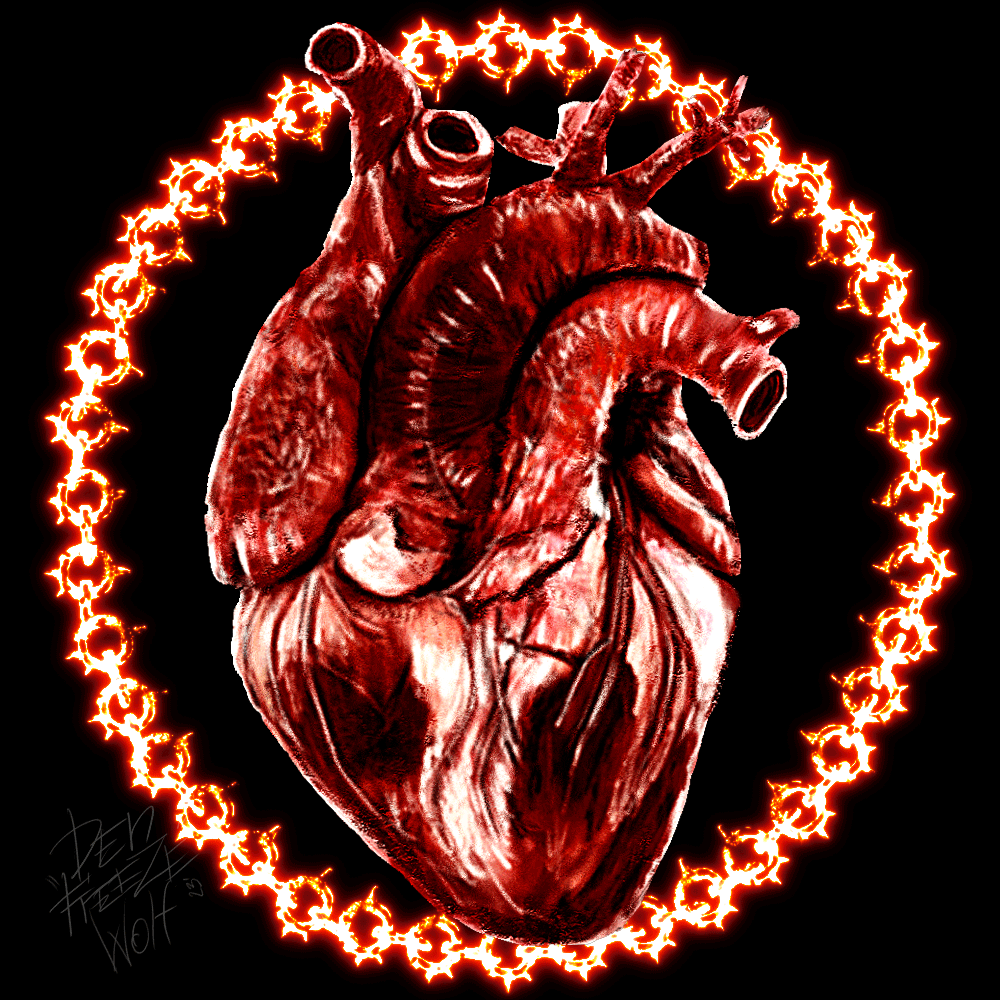

A GIF (Graphics Interchange Format) is a popular image format that supports both static and animated images. Known for its ability to create short, looping animations, it uses lossless compression and is limited to 256 colors, making it ideal for simple graphics and fun visuals.
I choose this image because, this image reming me the time when i newly intoduce with the mobile phones.I used to share with friends and save it as mobile wall papper.
To go back to Main page Click here